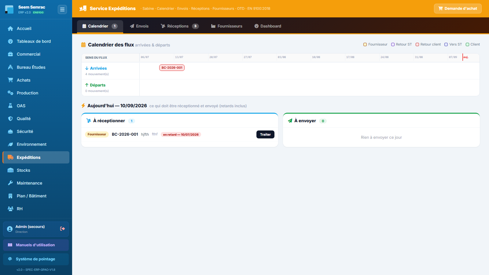
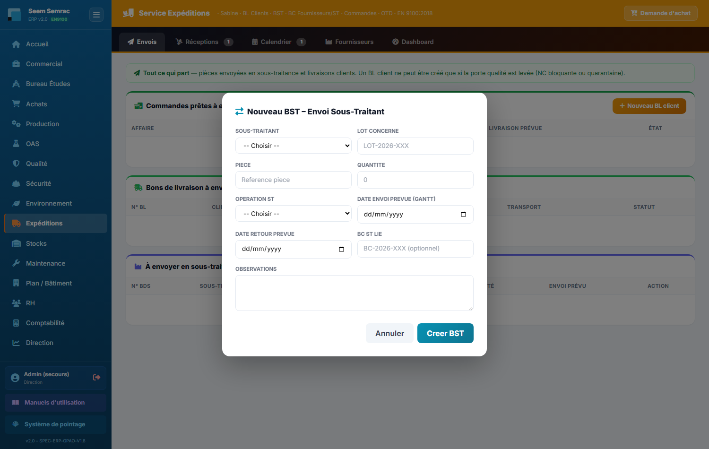
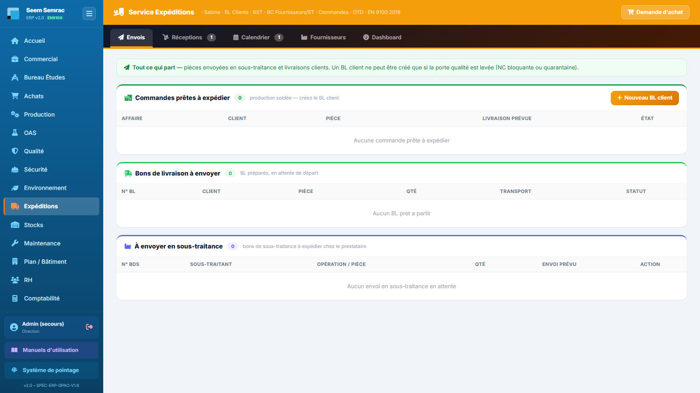
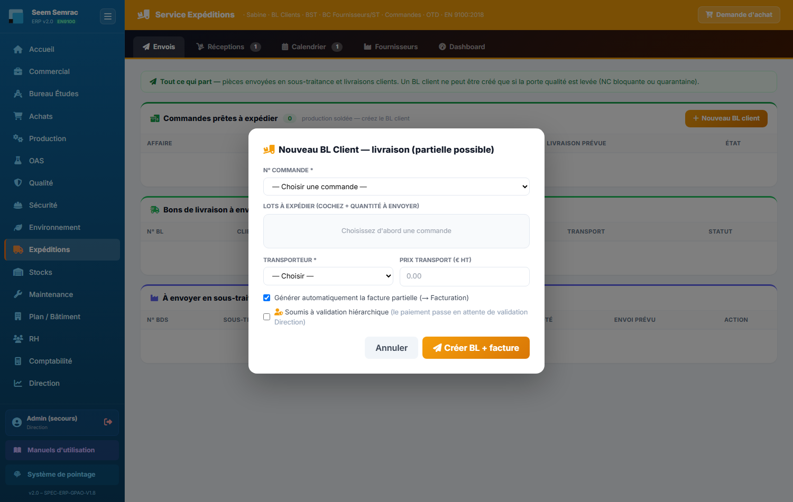
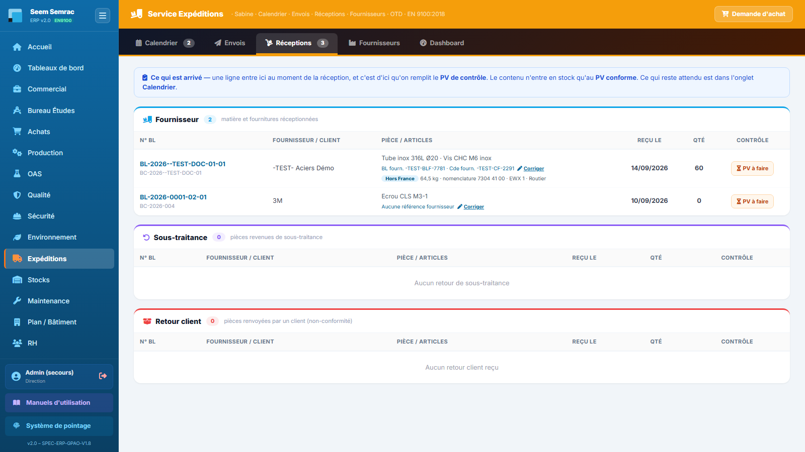
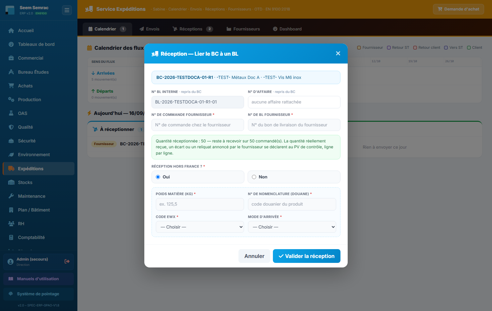
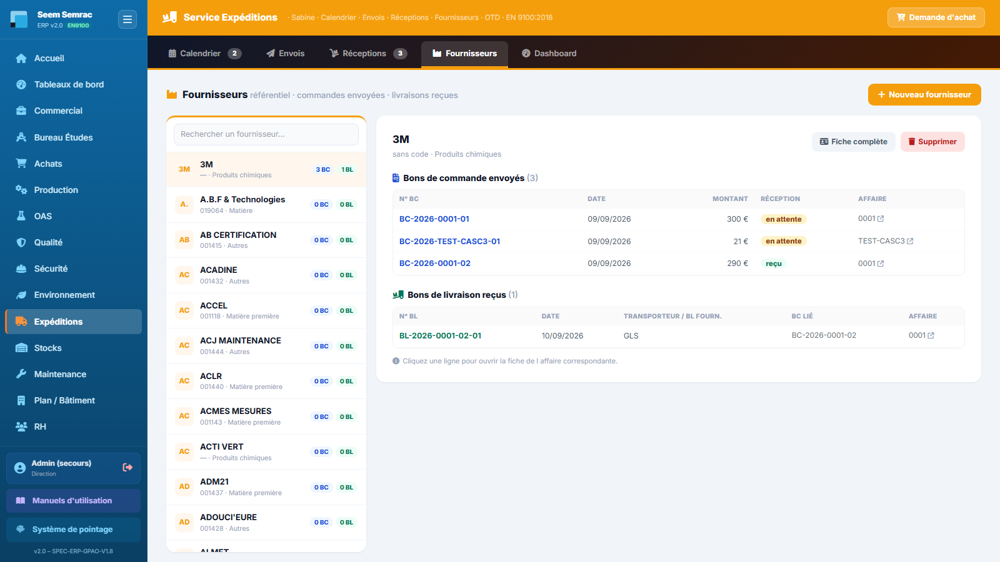
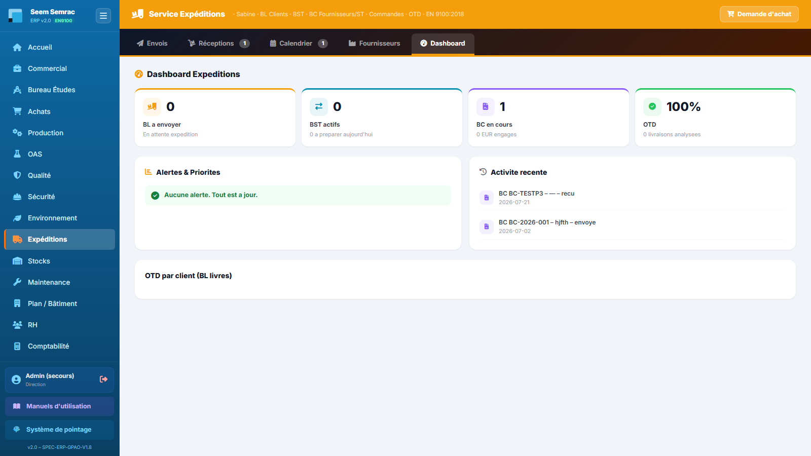
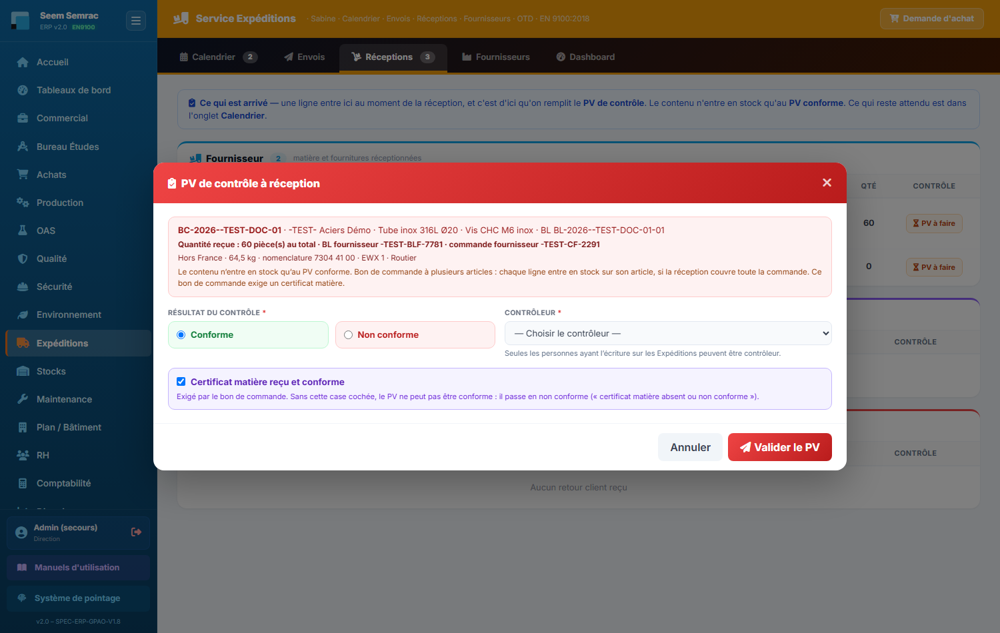

Les Expéditions sont la porte d'entrée et de sortie des marchandises. Le service est organisé autour d'une idée simple : chaque chose a un seul endroit. Ce qu'il y a à faire — réceptionner, envoyer — est dans le Calendrier, et nulle part ailleurs : c'est l'onglet d'accueil, votre plan de journée. Envois montre ce qui va partir (les commandes en cours, pour voir venir la charge) ; Réceptions montre ce qui est arrivé, et c'est de là qu'on remplit le PV de contrôle. S'y ajoutent le référentiel Fournisseurs et un Dashboard. Vous y apprendrez aussi comment l'ERP mesure la ponctualité (OTD), la vôtre envers les clients et celle de vos fournisseurs.
👤 Pour qui : Agent d'expédition (écriture : Expéditions, Stock · lecture : Commercial, Achats, Production)🧭 Dans l'ERP : Sidebar → Expéditions🗂 5 onglets
Le principe du service. Les cinq onglets ne sont pas cinq bases de données différentes : ce sont cinq projections des mêmes tables (bons de commande, bons de sous-traitance, bons de livraison, commandes, non-conformités). Une réception enregistrée apparaît immédiatement dans le calendrier et dans l'historique du fournisseur — vous n'avez jamais à saisir deux fois.
Et une règle de rangement : les actions du jour vivent dans le Calendrier, uniquement. Les onglets Envois et Réceptions sont des vues — ils montrent ce qui vient et ce qui est entré, ils ne demandent rien. Si vous cherchez un bouton, il est dans le Calendrier.
1
Calendrier & journée — l'onglet d'accueil
À quoi ça sert. C'est votre plan de journée, et le seul endroit où l'on agit. Voir arrivées et départs sur une même frise pour anticiper les journées chargées et repérer les retards d'un coup d'œil ; en dessous, le bloc « Aujourd'hui » liste précisément ce qui doit entrer et sortir, retards compris, chaque ligne portant son bouton.
Ce que vous voyez
Une frise unique, une ligne par sens de flux, chaque mouvement positionné à sa date. Une légende de couleurs distingue les natures : commande fournisseur, envoi ou retour de sous-traitance, livraison client, retour client.
Un repère sur le jour courant, et les mouvements dépassés signalés en retard.
Sous la frise, deux blocs : à réceptionner aujourd'hui et à envoyer aujourd'hui. Chaque ligne porte son bouton « Traiter » — c'est là que se font la réception d'un BC, le départ d'un BST, son retour et l'arrivée d'un retour client.

Calendrier — arrivées et départs sur une frise commune, puis le détail de la journée avec les actions à portée de clic.
Pas à pas — envoyer un BST chez le sous-traitant
Dans le bloc « à envoyer aujourd'hui », repérez la ligne Vers ST du BST et cliquez « Traiter ».
Confirmez : le départ est horodaté, et la pièce est désormais attendue en retour — elle apparaît à ce titre dans les arrivées de la frise.

Envoi en sous-traitance — le départ horodaté bascule automatiquement la pièce en « retour attendu ».
La porte de la gamme. Un BST ne peut partir que si l'opération juste avant lui, dans la gamme du lot, est soldée. C'est du bon sens d'atelier : on n'expédie pas une pièce dont l'usinage précédent n'est pas terminé, il n'y aurait rien à mettre dans le carton.
Quand la porte est fermée, le bouton « Traiter » laisse la place à une pastille verrou qui nomme l'opération attendue — par exemple 🔒 BDT-2026-0001-01-04 (Ébavurage) n'est pas soldé. Vous savez donc immédiatement qui relancer. La pièce repart d'elle-même dès que l'atelier solde ce bon de travail. Un BST placé en tête de gamme (rien avant lui — un traitement de surface sur matière brute, par exemple) part librement.
Astuce : commencez toujours la journée par cet onglet. Le bloc « Aujourd'hui » vous donne la liste de travail complète — entrées et sorties — sans avoir à basculer d'un onglet à l'autre. Les deux onglets suivants ne servent qu'à voir venir.
2
Envois — ce qui va partir
À quoi ça sert. Voir venir la charge d'expédition. Ce n'est pas une liste de tâches : rien ne s'y valide. On y lit ce qui est en cours de fabrication et ce qui est en cours de sous-traitance, pour savoir ce qu'on aura à faire partir dans les jours qui viennent.
Ce que vous voyez
Client — les commandes en cours, dès qu'elles sont passées en programmation. Chaque ligne porte l'affaire, le client, la pièce, une barre d'avancement (bons de travail soldés sur le total), la livraison prévue et l'état : En production, Prête à expédier, ou le motif du blocage qualité s'il y en a un.
Sous-traitance — les BST en cours : le sous-traitant, l'opération, la quantité, l'envoi prévu. La colonne d'état affiche 🔒 attend … quand l'opération précédente de la gamme n'est pas encore soldée.

Envois — les commandes en cours et les sous-traitances en cours : ce qu'on aura à faire partir.
Pas à pas — créer un bon de livraison client
Dans « Commandes prêtes à expédier », cliquez la commande concernée.
Sélectionnez les lots à expédier et la quantité : une livraison partielle est possible, le reliquat reste sur la commande.
Renseignez le transporteur et, si vous l'avez, le prix de transport.
Validez : le BL est créé, le stock est décrémenté et une facture client ainsi que l'écriture de vente sont préparées.

Nouveau bon de livraison — choix des lots libérés, quantités (partiel possible), transporteur et prix de transport.
La porte qualité. Un bon de livraison est refusé si le lot porte une non-conformité ouverte ou s'il est en quarantaine. Ce n'est pas un bug : c'est la garantie qu'aucune pièce douteuse ne part chez un client. Faites lever le blocage par la Qualité (libération du lot, dérogation, ou traitement de la NC).
3
Réceptions — ce qui est arrivé
À quoi ça sert. L'inverse d'Envois : tout ce qui est déjà entré, rangé par nature. Une ligne y arrive au moment de la réception — enregistrée, elle, depuis le Calendrier. C'est de cet onglet qu'on remplit le PV de contrôle de réception.
Ce que vous voyez
Trois familles, selon la provenance :
Fournisseur — les commandes fournisseurs réceptionnées : n° de BC, fournisseur, articles, quantité reçue, date d'arrivée réelle, bon de livraison rattaché.
Sous-traitance — les pièces revenues de chez un prestataire.
Retour client — les retours arrivés, rattachés à leur non-conformité.
Chaque ligne porte un bouton « PV de contrôle » : c'est le contrôle de réception, et il se remplit ici, au moment où l'on a la pièce en main.
Ce qui n'est plus ici. Les commandes à réceptionner sont dans le Calendrier — c'est une action, elle vit avec les autres actions du jour. Et la validation d'une commande par le fournisseur se fait désormais dans Achats → onglet « Bons de commande » : c'est l'acheteur qui suit l'accusé de réception de son fournisseur, pas l'expéditionnaire.

Réceptions — tout ce qui arrive, regroupé par nature : commandes fournisseurs et sous-traitants, retours de sous-traitance, retours clients, puis les arrivées déjà enregistrées.
Pas à pas — enregistrer une réception fournisseur
Cela se fait depuis le Calendrier, bloc « à réceptionner aujourd'hui ».
Repérez la ligne du bon de commande et cliquez « Traiter ». Le n° d'affaire et le n° de bon de livraison sont déjà remplis — ils viennent du bon de commande, il n'y a pas à les ressaisir.
Vérifiez la quantité reçue : elle peut être inférieure à la quantité commandée (réception partielle), le BC reste alors ouvert pour le solde.
Renseignez le transporteur et la référence de transport si le colis en porte une — c'est ce qui alimentera la colonne Transporteur de l'historique fournisseur.
Enregistrez : un bon de livraison de réception est créé et rattaché au BC, la date d'arrivée réelle est posée, et la ligne bascule dans « Arrivées enregistrées ».

Enregistrer une réception — quantité reçue, transporteur et référence de transport ; la réception partielle laisse le bon de commande ouvert pour le solde.
Pas à pas — réceptionner un retour client
Le retour doit d'abord avoir été annoncé en Qualité : à la déclaration de la non-conformité client, cochez « Retour de marchandise prévu » et renseignez le n° de commande, la quantité et la date prévue.
Il apparaît alors dans le Calendrier, en arrivée attendue. Cliquez « Traiter », puis « Enregistrer l'arrivée ».
Le n° de commande est prérempli depuis la non-conformité ; complétez la quantité réellement revenue et validez.
Un bon de livraison d'entrée est créé et rattaché à la commande, et la non-conformité passe en « retour reçu ».
Attention : un retour client ne se crée pas ici de toutes pièces. Il naît toujours d'une non-conformité côté Qualité — c'est ce qui garantit qu'un retour est tracé, analysé et, le cas échéant, transformé en avoir.
Règles & points d'attention
La date d'arrivée prévue peut être modifiée, mais l'ERP gèle la première date promise : c'est elle, et non la date repoussée, qui sert à calculer l'OTD du fournisseur. Un fournisseur ne peut donc pas « racheter » sa ponctualité en décalant ses dates. Ce changement de date se fait à deux endroits :
Dans Achats → onglet « Bons de commande » — pour n'importe quelle commande encore attendue, y compris une commande déjà validée par le fournisseur. Une date saisie de travers se corrige donc tant que la marchandise n'est pas arrivée, ce qui remet le suivi des délais d'aplomb. Sur les lignes déjà réceptionnées, le bouton bleu « Date d'arrivée » laisse place à une pastille grise 🔒 Figée.
La fenêtre qui s'ouvre ne demande qu'une seule chose : la nouvelle date, puis « Enregistrer la date ». ⚠ Après la validation du fournisseur, la date n'est plus modifiable : c'est sa promesse, elle l'engage.
Dès que la marchandise est arrivée, la date d'arrivée prévue est figée, définitivement — et cela vaut aussi pour une réception partielle. La raison est simple : cette date est la promesse du fournisseur, c'est elle qui mesure sa ponctualité, et la réécrire après coup effacerait le retard constaté. C'est le prolongement direct de la règle ci-dessus sur le gel de la première date promise. Une commande est considérée comme arrivée dès qu'elle porte une date de réception réelle, un bon de livraison rattaché ou un statut de réception (« Reçu » comme « Reçu partiel »). Si vous ouvrez la fenêtre de changement de date sur une telle commande, le champ date apparaît grisé et la mention « Date figée depuis la réception » remplace le bouton « Enregistrer la date ». En pratique, les files « À réceptionner » et « En attente de validation fournisseur » ne contiennent que des commandes encore attendues : le cas ne s'y présente quasiment jamais.
Un bon de commande annulé n'apparaît nulle part dans le service — ni en réception, ni au calendrier, ni dans l'historique fournisseur.
À quoi ça sert. Consulter la liste des fournisseurs, en ajouter et en supprimer, et surtout retrouver pour chacun tout l'historique des échanges : les bons de commande qui lui ont été envoyés et les bons de livraison reçus de ses transporteurs. Chaque ligne ouvre l'affaire correspondante.
Ce que vous voyez
L'écran est en deux colonnes.
À gauche, la liste : un champ « Rechercher un fournisseur… » qui filtre à la frappe, puis une ligne par fournisseur avec son nom, son code, sa catégorie et deux compteurs — N BC (bons de commande envoyés) et N BL (bons de livraison reçus).
À droite, le détail du fournisseur sélectionné : son identité (code, catégorie, contact, téléphone, e-mail), puis deux tableaux.
Bons de commande envoyés — N° BC · Date · Montant · Réception (reçu ou en attente) · Affaire.
Bons de livraison reçus — N° BL · Date · Transporteur · BC lié · Affaire.

Fournisseurs — la liste filtrable à gauche avec les compteurs BC / BL, le détail du fournisseur à droite : commandes envoyées et livraisons reçues, chaque ligne ouvrant son affaire.
Pas à pas — consulter l'historique d'un fournisseur
Tapez les premières lettres du nom dans le champ de recherche, ou faites défiler la liste.
Cliquez le fournisseur : le détail s'affiche à droite, sans recharger la page.
Lisez ses bons de commande envoyés — vous voyez immédiatement lesquels sont encore en attente de réception.
Lisez ses bons de livraison reçus : la colonne Transporteur indique par qui la marchandise est arrivée, et la colonne BC lié rattache la livraison à sa commande.
Cliquez n'importe quelle ligne des deux tableaux : l'ERP ouvre la fiche de l'affaire correspondante, où vous retrouvez la commande complète, de la demande de travaux à la facturation.
Pas à pas — ajouter un fournisseur
Cliquez « Nouveau fournisseur » en haut à droite.
Renseignez au minimum le nom (seul champ obligatoire) ; complétez si vous les avez le code, la catégorie, le contact, le téléphone, l'e-mail et l'adresse.
Enregistrez : le fournisseur rejoint le référentiel et devient sélectionnable partout ailleurs dans l'ERP — demandes de prix, bons de commande, catalogue.
Pas à pas — supprimer un fournisseur
Sélectionnez le fournisseur, puis cliquez « Supprimer » dans le bandeau de droite.
Confirmez. Les bons de commande déjà émis ne sont pas supprimés : l'historique comptable et documentaire reste intact.
Bon à savoir : le bouton « Fiche complète » ouvre la fiche fournisseur 360 du service Achats — scorecard OTD, catalogue de produits, prix négociés, qualification. Cet onglet-ci est volontairement centré sur le flux logistique ; la relation commerciale se pilote côté Achats.
Astuce : un fournisseur qui affiche beaucoup de BC et peu de BL a des commandes en souffrance. Les compteurs de la liste sont un bon détecteur de relances à passer.
5
Dashboard
À quoi ça sert. Les indicateurs du service : volumes expédiés, ponctualité (OTD) client et fournisseur, en-cours et retards. C'est la vue que l'on présente en revue de service.

Dashboard Expéditions — volumes, OTD et en-cours ; la barre de filtres commune permet de changer la période, le site ou le client, et de comparer à l'année précédente.
L'OTD fournisseur se calcule sur la première date promise, jamais sur une date repoussée.
Le PV de contrôle à réception alimente la qualité fournisseur : un colis reçu non conforme dégrade la scorecard du fournisseur, consultable côté Achats.

PV de contrôle à réception — conformité du lot reçu ; un écart déclenche une non-conformité et, si nécessaire, une mise en quarantaine.